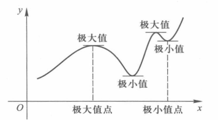
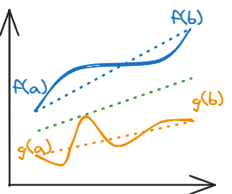

修改了结构，方便复习查看；增补了一些内容（Cauchy中值定理的说明）。
Taylor公式推导
Q1：Taylor公式如何推导？有什么用？
Taylor公式：
我们希望使用一个n次多项式来拟合一个函数f的行为：
a0+a1(x−x0)+...+an(x−x0)n+o((x−x0)n)
构造这个多项式的用意在哪里呢，在于拿它和f作差之后剩下的是一个比(x−x0)n高阶的无穷小。由此，我们可以利用这个思路来得出中间每一项的系数，最终就会得到：
f(x)=k=0∑nk!1f(k)(x0)(x−x0)k+o((x−x0)n)
写下最上面的多项式的时候我突然想到，这个式子非常有趣，和进制非常像。按次数进行排列，且n求到越高的次数，我们的表示会越趋近精确，或许可以不甚严谨地类比成使用进制表示小数：
用十进制表示π的小数部分（.1415926 …），首先计算(π*10)整除10，那么得到1；下一步重复该过程，得到4；等等。假如我们在这一步就停下，我们将得到一个.0015926…的余数，此时我们精确到了小数点后第2位，且余数是小于0.01的水平。
我不知道这两件事之间的联系能不能再明白点儿，至少思路是类似的，用一组基底进行变换。以后再探究了。
中值定理
Q2：几个中值定理如何理解？如何推导？
中值定理：
微分学中值定理的意义在于沟通了函数的局部特性（导数）和整体特性。
（前置知识）极值点：
在点x0的某个邻域O(x0,δ)上恒成立f(x)≤f(x0)或f(x)≥f(x0)。
Fermat定理
若点x0是函数f的一个极值点，且f在x0点可导，则必有f′(x0)=0.

证明思路：
左右导相等且异号，故只能均为0。
Rolle定理
设函数f在[a,b]上连续，在(a,b)上可导，且f(a)=f(b)，则至少有一点ξ∈(a,b)，使得 f′(ξ)=0 .

证明思路：
-
一定有最大值（M）或最小值（m）
-
由于f(a)=f(b)，
要么M=m=f(a)=f(b)，则f′(ξ)=0；
要么M≠m，则M或m不在区间端点上，是极值点。
（可见f(a)=f(b)是为了这碟醋）
-
Fermat定理。
微分学中值定理/Lagrange中值定理

设函数f在[a,b]上连续，在(a,b)上可导，则至少有一点ξ∈(a,b)，使得f(b)−f(a)=f′(ξ)(b−a)。
证明思路：
把AB放倒变成水平的，就能化归成Rolle定理的情况。所以，我们希望构造F(x)，使得F(a)=F(b)，且取AB连线上任意一点，设其横坐标为x，也有F(x)=F(a)。
则，我们得到F(x)=f(x)−b−af(b)−f(a)；对其求导知存在ξ使得F′(ξ)=f′(ξ)−b−af(b)−f(a)=0，得证。
Cauchy中值定理
设函数f和g均在[a,b]上连续，在(a,b)上可导，且在(a,b)上g’(x)≠0，则至少存在一点ξ∈(a,b)使得g(b)−g(a)f(b)−f(a)=g′(ξ)f′(ξ)。
证明：
1° f(b)≠f(a)时，
构造H(x)=(f(b)−f(a))/(b−a)f(x)−f(a)−(g(b)−g(a))/(b−a)g(x)−g(a)
可知H(a)=0，H(b)=(b−a)−(b−a)=0
故H(a)=H(b)
由Rolle定理知∃ξ∈(a,b)使H′(ξ)=0
f′(ξ)f(b)−f(a)=g′(ξ)g(b)−g(a)
移项即有g(b)−g(a)f(b)−f(a)=g′(ξ)f′(ξ)
2° f(b)=f(a)时（trivial）
需证g′(ξ)f′(ξ)=0；由Rolle定理知∃ξ∈(a,b)使f′(ξ)=0，此时g′(ξ)f′(ξ)=0，得证。

——如何构造出来的？
我们希望f′(ξ)在原图像中对应f(x)上两点之间的斜率kf=b−af(b)−f(a)
g′(ξ)在原图像中对应g(x)上两点之间的斜率kg=b−ag(b)−g(a)
而我们需要证的是两者之商g(b)−g(a)f(b)−f(a)=k=kgkf
现在欲将式子整理成一侧与f相关，一侧与g相关（各管各的），则有kff(b)−f(a)=kgg(b)−g(a)
用x替换b的位置，对于等式kff(x)−f(a)=kgg(x)−g(a)来说x=a和x=b都是解
移项写出辅助函数H(x)=kff(x)−f(a)−kgg(x)−g(a)，这就是我们在上面证明中用到的那个。
20年考研亦出过原题，参考下面答案。

Cauchy收敛准则
Q3：cauchy收敛准则如何描述？如何理解+推导？
Cauchy收敛准则：
设{xn}为一数列，如果对于任意给定的ε＞0，都存在正整数N，使得∣xm−xn∣<ϵ,∀m,n>N，则{xn}收敛。
这个准则的意义在于可以在不知道极限值具体是多少的前提下得出收敛结论；证明方式大体是，使用有界（需证）⇒有收敛子列来引入这个子列以及它的极限，从而推导出原数列收敛。
不需要求出极限的收敛：Cauchy 收敛原理
Cauchy收敛准则 - valar-morghulis - 博客园
别的一点思考
-
考察渐近线和Taylor公式之间的联系

何必提这点呢？观察Taylor公式的给出方式，和渐近线（就比如说y=ax+b吧）的参数的求法，完全是同一件事。（渐近线的求法很好理解，拿这个反过来理解Taylor公式的导出方式还好使一点，后者是前者的推广）
-
极限：或许可以采取如下理解
给定一个变量→值的映射关系，现猜测施加一个极微小的扰动后得到的值。

这可以解释另一个（我本人）容易搞不懂的问题，即lim到底是个什么玩意儿呢，放在底下和挪上去有什么区别呢。
解释是，举个很简单的例子，y=x→1limex2x2+1，我们把它分写成两个函数f(x)=x2x2+1和g(x)=ex，那么就有y=g(f(x))。现在我们在预测x在1左右的时候ex2x2+1会有怎样的值；如果要把lim挪到上面去，也就是把lim挪到g(x)的参数部分中，显然需要跨越这层链条；那要求是什么呢，当然是g(x)可预测（连续）啦。
现在请认真思考一下链式求导法则；从极限到导数，无非本来只关心x轴上的波动，现在还开始关心与之相关联的（由ydx所给出的）长条的面积。因为多了（链条中间的）函数值作为关注对象，求导也需要多乘上中间的值，这就是在极限运算顺序变换基础上作的修改。
-
原来使用\limits就可以把上下限放在符号的上下而不是左右了
还存在的疑惑
-
何谓“不可导”？怎么理解高阶导数/“导数的导数”？
目前我只考虑了这样几点：
- 求导和积分互为逆运算
- 不可导的可能原因：
- 左右导数不同
- 左右导数本来就求不了
- 求出来是∞
- 不连续致使无法求解
- “可导”总是暗指存在这样一个小小的邻域的，一个孤立的点没道理可导（参照上面的不可导归因）
但这并没有直观解决我的迷惑，因为我其实是不太理解高阶的导数如何对原本的图像产生影响（或者说我做题太少，暂时连哪里不理解也说不上来）。
我暂时只能将下面这两个条件粗略理解为偶函数/奇函数在一个局部的行为。这还是有点模糊，我只能过几天再回来看看了。